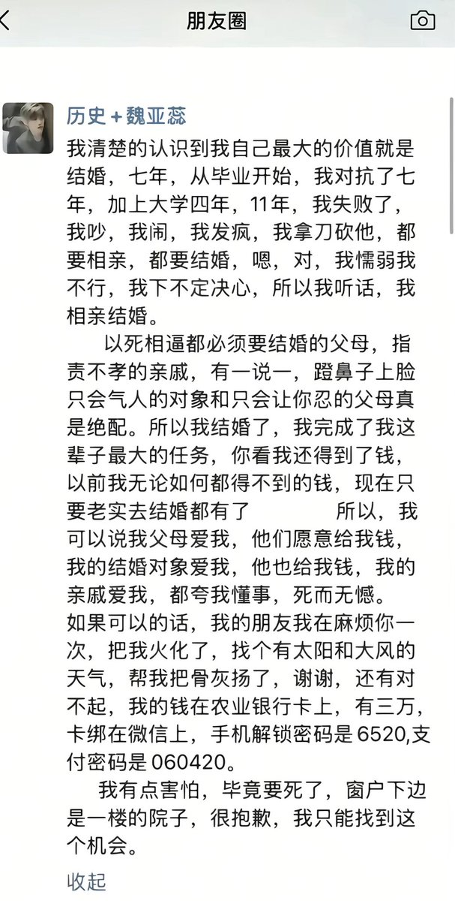
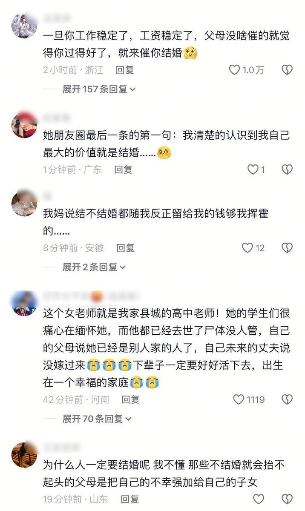
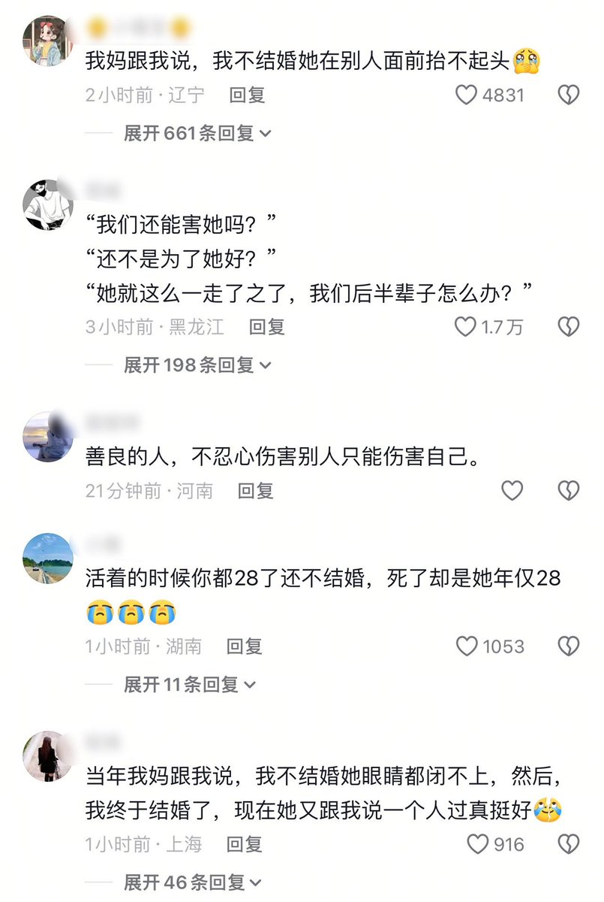

星野ふじ
@hoshinofujivy
今年是2025年吗



Iggie🚁
@Kenntnis22
28岁高中女教师新婚之夜跳楼身亡，死前朋友圈最后一条第一句就是：“我清楚地认识到我自己最大的价值就是结婚……”
被迫相亲、被迫结婚、被迫做听话的乖女孩就是逼死她的根本原因，然而她的死并不会被家人和亲戚理解，他们只会反过来埋怨她思想观念走极端……
这就是社会在吃人： https://t.co/tYfRgu58kd